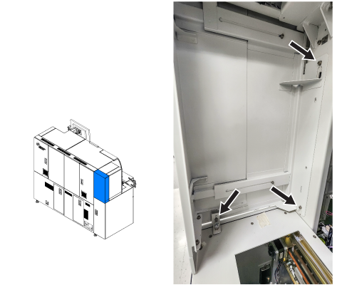
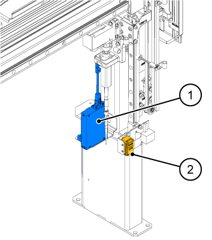
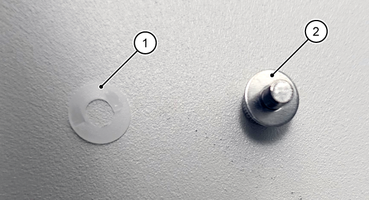
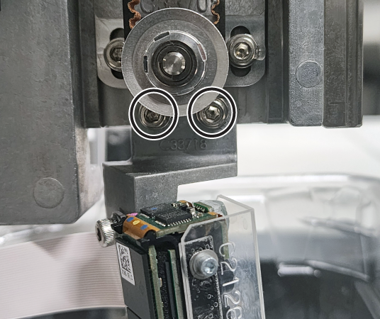

This topic includes information about how to replace the precision sample pipettor camera.
Safety Reminder
Servicing the DxI 9000 instrument involves potential risks for pinch and puncture, electrical shock, and exposure to hazardous materials. You must mitigate these risks by taking appropriate countermeasures. See
Safety for more information.
Tools
To replace the camera, you will need the following tools:
Figure 363: Locations of Doors, Drawers, and Covers on the Instrument
1
RV cover
2
Center cover
3
Substrate door
4
Reagent cover
5
Storage compartment
6
Sample handler input area cover
7
Wash buffer drawer
8
Waste drawer
9
Sample handler output area
10
Tip tray waste drawer
11
Tip feeder cover
Open the left-side cover over the DispoTip Stocker module.
Figure 364: Left-side Cover over DispoTip Stocker module
Find the precision sample pipettor.
Figure 365: Aliquot and Precision Sample Pipettor Locations
1
Aliquot sample pipettor
2
Precision sample pipettor
Move the precision sample pipettor over to the tip supply.
Note: If the pipettor mandrel has fallen due to a loss of power, move it up by the motor hub to prevent damage or slippage.
Note: You may need to remove the rear corner panel from the instrument to gain full access to the precision sample pipettor camera. Use the M3 hex screwdriver to remove the two screws attached to the side frame, and manually remove the screw that is attached to the bottom frame.
Figure 366: Rear Corner Panel Location and Screws

Find the precision sample pipettor camera.
Figure 367: Precision Sample Pipettor Camera and Backlight

1
Backlight
2
Camera
Disconnect the Ethernet and camera power connectors from the printed circuit board (PCB) for the camera.
Use the M2.5 hex screwdriver to remove the screws that hold the PCB to the pipettor arm.
Note: The screws that attach the PCB to the pipettor arm include plastic washers.
Figure 369: Precision Sample Pipettor Camera PCB Screws and Washers

1
Plastic washer
2
Screw
Note: You should move the tip supply carriage beneath the precision sample pipettor and place a container (e.g. an empty tip supply shell) onto the carriage beneath the pipettor to catch any screws or parts that might fall during the PCB and camera removal procedure.
Remove the two screws that hold the camera mount to the pipettor arm.
Figure 371: Aliquot Sample Pipettor Camera Mount Screws

With the Ethernet and camera power connectors facing toward the pipettor arm, align the new PCB for the camera to the screw posts on the pipettor arm. Be sure to place the plastic washers onto the screw posts. Use the screwdriver and the screws to attach the PCB to the arm.
Attach the Ethernet and camera power connectors to the PCB.
Use the M2.5 hex screwdriver and two screws to attach the new camera mount to the pipettor arm.